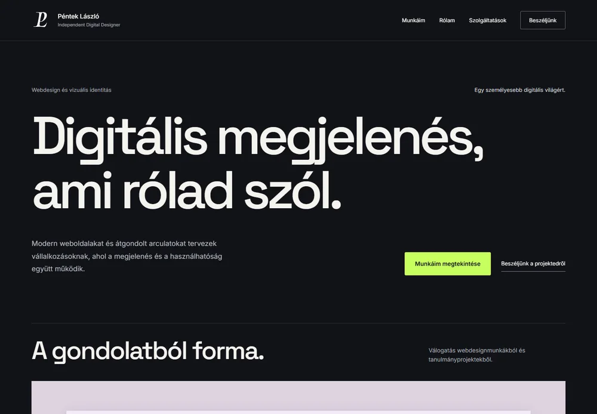
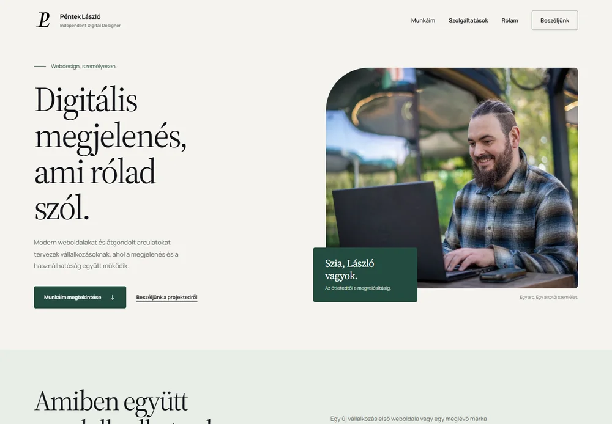
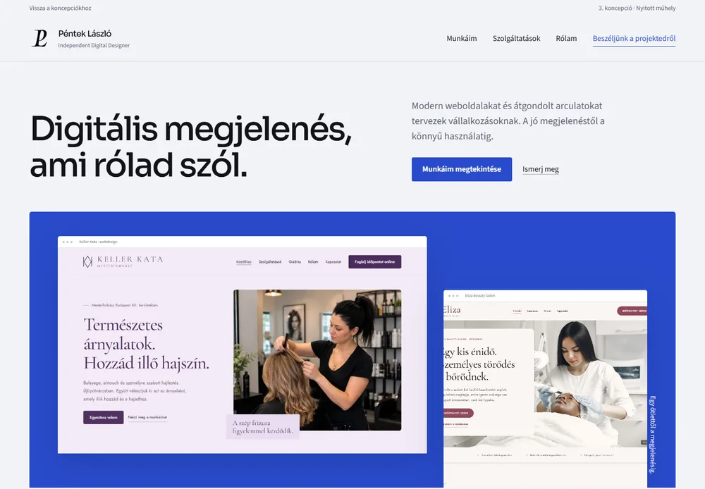

Egy személyes márka.
Három külön világ.
Nézd meg a három kezdőoldalt, görgess végig rajtuk, és figyeld meg, melyik áll hozzád a legközelebb. A kedvenc részleteidet később össze is hangolhatjuk.
ami rólad szól.

Grafit, lime és határozott tipográfia. Tágas felületek, nagy munkabemutatók.
Megnézem az oldaltami rólad szól.


Világos felületek, mélyzöld részletek és személyes portré. Nyugodt, közvetlen hangulat.
Megnézem az oldaltami rólad szól.


Kobaltkék hangsúlyok, aszimmetrikus kompozíciók. A munkák és a tervezés folyamata kerülnek előtérbe.
Megnézem az oldaltMit érdemes figyelned?
Melyik nyitó rész fog meg? Melyik színvilágot érzed a sajátodnak? Melyik oldalt küldenéd el szívesen egy leendő ügyfélnek? Elég ennyit mondanod: „az első címsora, a második hangulata és a harmadik munkabemutatása”.